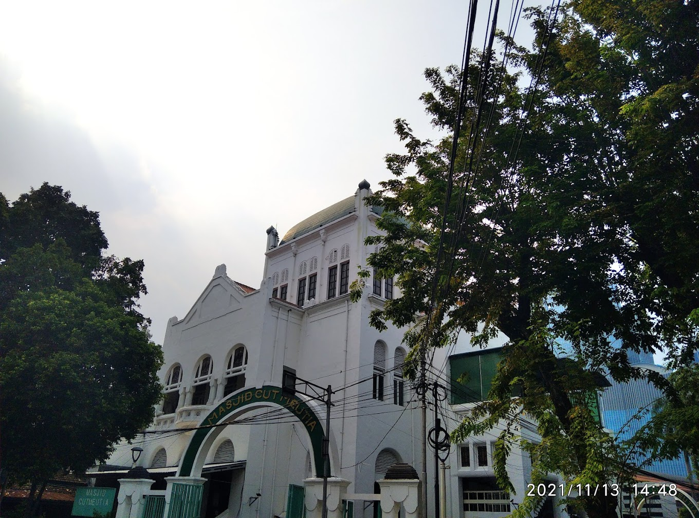
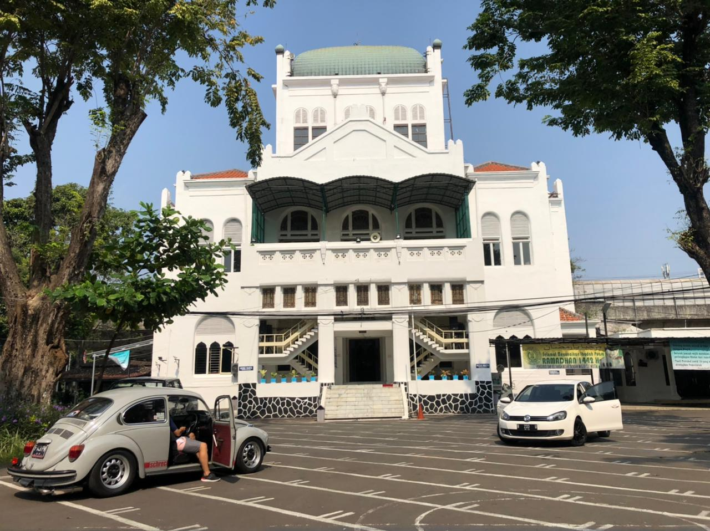
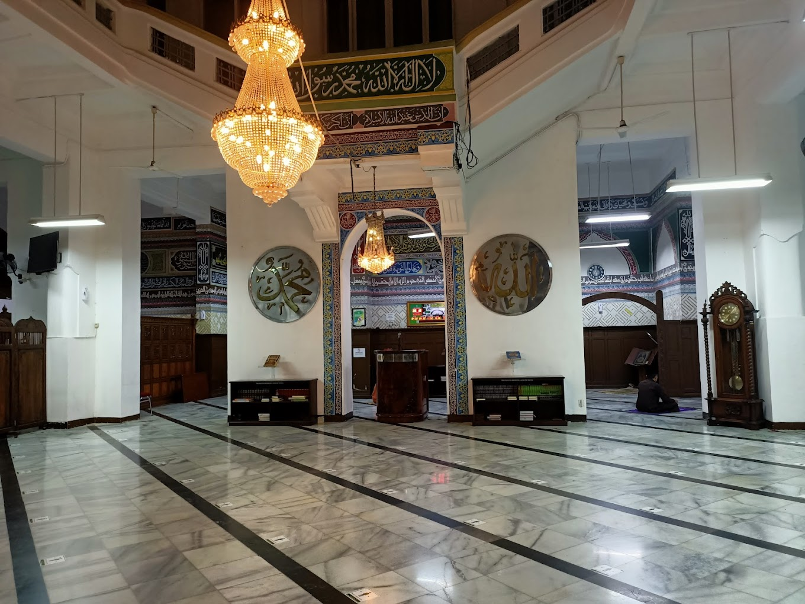
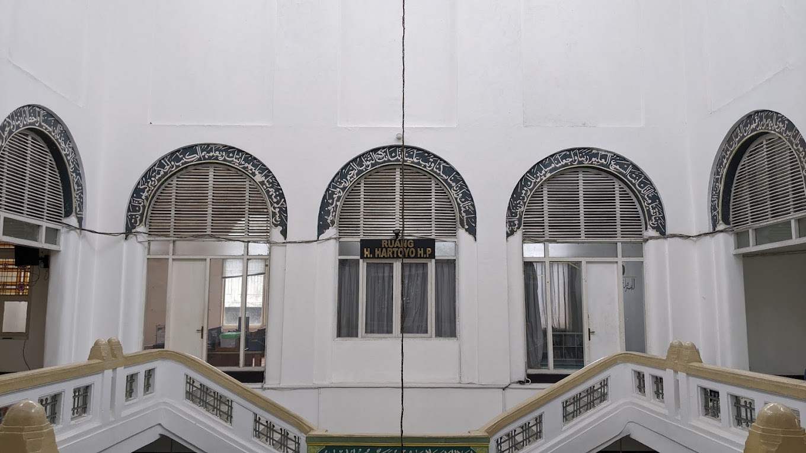
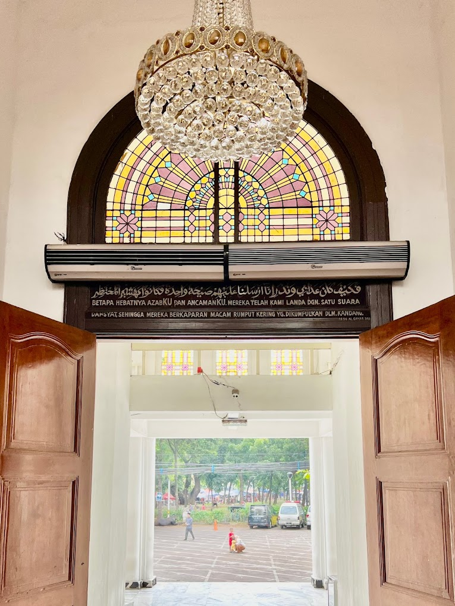
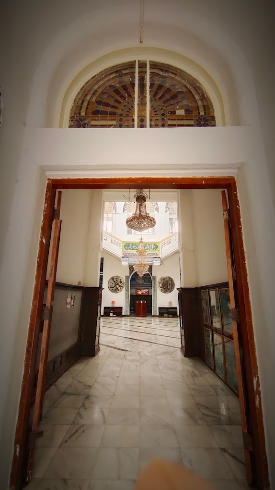
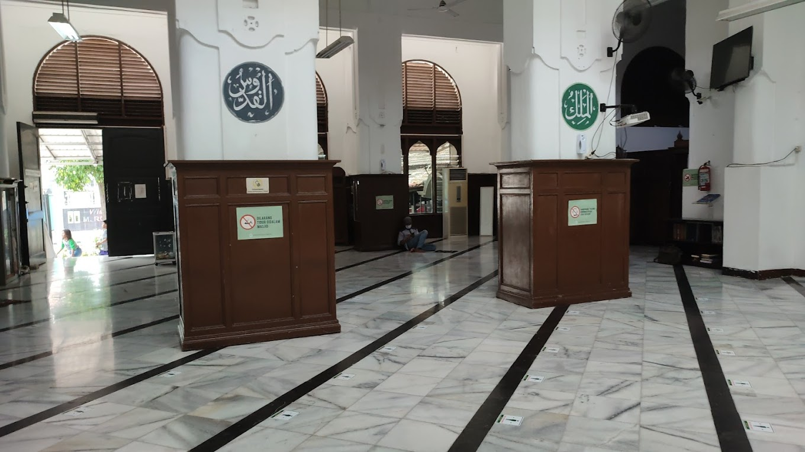
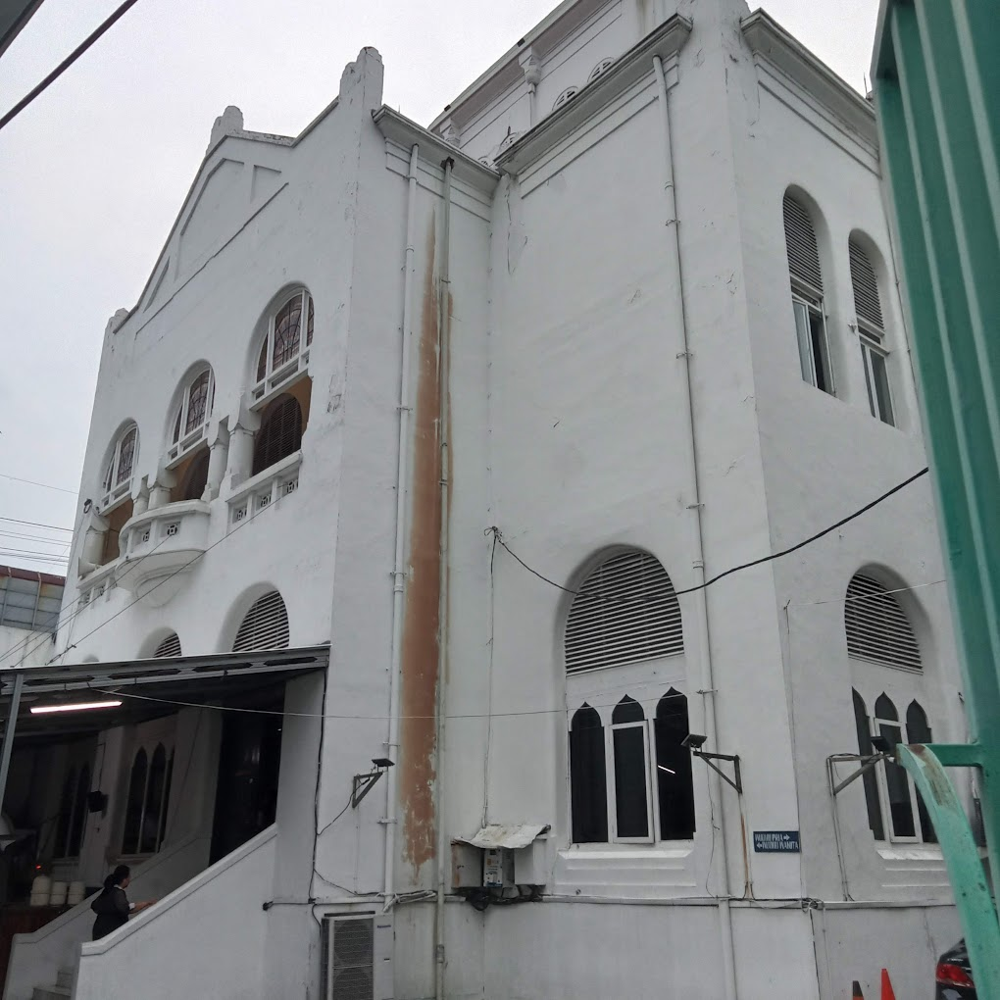
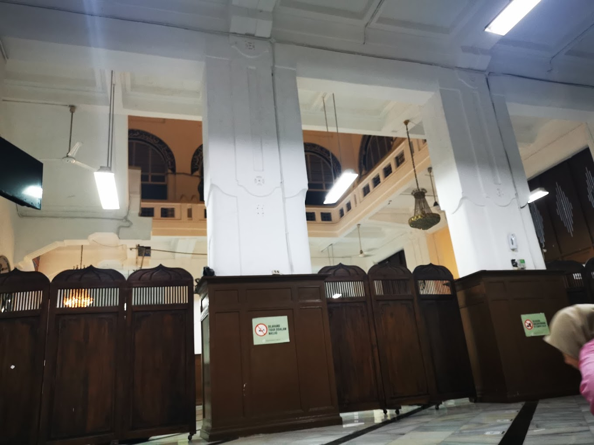

Profil masjid Cut Meutia
Galery
-










Masjid Cut Meutia, masjid bersejarah di Jakarta Pusat, memiliki berbagai fasilitas yang lengkap. Fasilitas tersebut meliputi ruang ibadah utama yang mampu menampung hingga 1.000 jamaah, tempat wudhu yang tersebar di berbagai titik, fasilitas umum, dan ruang serbaguna. Selain itu, masjid ini juga sering mengadakan berbagai kegiatan keagamaan dan sosial.
Alamat: Jl. Taman Cut Mutiah No.1 10, RT.10/RW.5, Kb. Sirih, Kec. Menteng, Kota Jakarta Pusat, Daerah Khusus Ibukota Jakarta 10350

Letaknya yg strategis, membuat mesjid Cut Meutia selalu ramai di kunjungi. Mesjidnya ckp luas, untuk tempat wudhu wanitanya lumayan gede, kebersihan kamar mandi jg baik.

Masjidnya dekat dengan stasiun kereta api Gondangdia. Dekat dengan pujasera. Berada di pusat kota Jakarta. Toilet bersih dan wangi karbol. Tempat Parkirnya luas. Bangunan masjid Cut Mutia bergaya kolonial Belanda.

Masjid terletak di tengah kota yg aksesnya mudah ditempuh. Bangunannya punya nilai sejarah, yg awalnya di desain bukan utk mesjid. Karenanya tidak mempunyai kubah serta arah saf miring yg ekstrem. Area wudhu n kamar mandi yg bersih dan wangi.